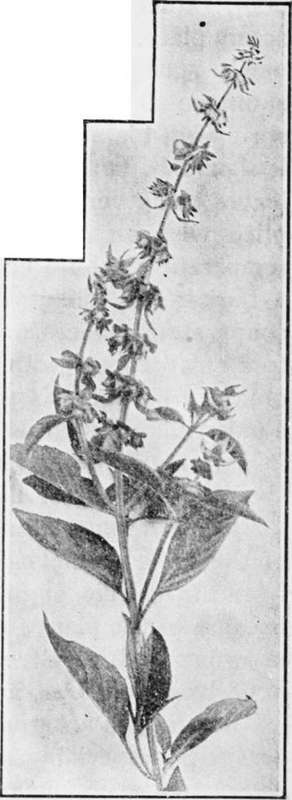

Basil
Description
This section is from the book "Culinary Herbs", by M. G. Kains. Also available from Amazon: Culinary Herbs, Their Cultivation, Harvesting, Curing and Uses.
Basil
Basil (Ocymum basilicum. Linn.), an annual herb of the order Labiatae. The popular name, derived from the specific, signifies royal or kingly, probably because of the plant's use in feasts. In France it is known as herb royale, royal herb. The generic name is derived from Oza, a Greek word signifying odor.
The plant is a native of tropical Asia, where for centuries, especially in India, it has been highly esteemed as a condiment. Probably the early Greek and Roman writers were well acquainted with it, but commentators are not decided. They suppose that the Okimon of Hippocrates, Dioscorides and Theophrastus is the same as Ocimum hortense of Columella and Varro.
The plant's introduction into England was about 1548, or perhaps a little earlier, but probably not prior to 1538, because Turner does not mention it in his "Libellus," published in that year. It seems to have grown rapidly in popularity, for in 1586 Lyte speaks of it as if well known. In America it has been cultivated somewhat for about a century partly because of its fragrant leaves which are employed in bouquets, but mainly for flavoring culinary concoctions. In Australia it is also more or less grown, and in countries where French commerce or other interests have penetrated it is well known.
There are several related species which, in America less than in Europe or the East, have attracted attention. The most important of these is dwarf or bush basil (O. minimum, Linn.), a small Chilian species also reported from Cochin China. It was introduced into cultivation in Europe in 1573. On account of its compact form it is popular in gardens as an edging as well as a culinary herb, for more than a century it has been grown in America. Sacred basil (O. sanctum), an oriental species, is cultivated near temples in India and its odoriferous oil extracted for religious uses. Formerly the common species was considered sacred by the Brahmins who used it especially in honor of Vishnu and in funeral rites. An African species, O. fruticosum, is highly valued at the Cape of Good Hope for its perfume.
Sweet Basil
Description
From the small, fibrous roots the square stems stand erect about 1 foot tall. They are very branching and leafy. The leaves are green, except as noted below, ovate, pointed, opposite, somewhat toothed, rather succulent and highly fragrant. The little white flowers which appear in midsummer are racemed in leafy whorls, followed by small black fruits, popularly called seeds. These, like flaxseed, emit a mucilaginous substance when soaked in water. About 23,000 weigh an ounce, and 10 ounces fill a pint. Their vitality lasts about eight years.
Like most of the other culinary herbs, basil has varied little in several centuries; there are no well-marked varieties of modern origin. Only three varieties of common basil are listed in America; Vilmorin lists only five French ones. Purple basil has lilac flowers, and when grown in the sun also, purple leaf stems and young branches. Lettuce-leaved basil has large, pale-green blistered and wrinkled leaves like those of lettuce. Its closely set clusters of flowers appear somewhat late. The leaves are larger and fewer than in the common variety.
The dwarf species is more compact, branching and dainty than the common species. It has three varieties; one with deep violet foliage and stems and lilac white flowers, and two with green leaves, one very dense and compact.
East Indian, or Tree Basil (0. gratissimum, Linn.), a well-known species in the Orient, seems to have a substitute in O. suave, also known by the same popular name, and presumably the species cultivated in Europe and to some extent in America. It is an upright, branching annual, which forms a pyramidal bush about 20 inches tall and often 15 inches in diameter. It favors very warm situations and tropical countries.
Cultivation
Basil is propagated by seeds. Because these are very small, they are best sown in flats under glass, covered lightly with finely sifted soil and moistened by standing in a shallow pan of water until the surface shows a wet spot. When about an inch tall, the seedlings must be pricked out 2 inches apart each way in larger-sized flats. When 3 inches tall they will be large enough for the garden, where they should be set 1 foot asunder in rows 15 to 18 inches apart. Often the seed is sown in the mellow border as early in the spring as the ground can be worked. This method demands perhaps more attention than the former, because of weeds and because the rows cannot be easily seen. When transplanting, preference should be given to a sunny situation in a mellow, light, fertile, rather dry soil thoroughly well prepared and as free from weeds as possible. From the start the ground must be kept loose, open and clean. When the plants meet in the rows cultivation may stop.
First gatherings of foliage should begin by midsummer when the plants start to blossom. Then they may be cut to within a few inches of the ground. The stumps should develop a second and even a third crop if care is exercised to keep the surface clean and open. A little dressing of quickly available fertilizer applied at this time is helpful. For seed some of the best plants should be left uncut. The seed should ripen by mid-autumn.
For winter use plants may be transplanted from the garden, or seedlings may be started in September. The seeds should be sown two to the inch and the seedlings transplanted to pots or boxes. A handy pot is the 4-inch standard; this is large enough for one plant. In flats the plants should be 5 or 6 inches apart each way.
Uses
Basil is one of the most popular herbs in the French cuisine. It is especially relished in mock turtle soup, which, when correctly made, derives its peculiar taste chiefly from the clovelike flavor of basil. In other highly seasoned dishes, such as stews and dressings, basil is also highly prized. It is less used in salads. A golden yellow essential oil, which reddens with age, is extracted from the leaves for uses in perfumery more than in the kitchen.
The original and famous Fetter Lane sausages, formerly popular with Cockney epicures, owed their reputation mainly to basil. During the reigns of Queen Mary and Queen Elizabeth farmers grew basil in pots and presented them with compliments to their landladies when these paid their visits.
Continue to:
- prev: Balm
- Table of Contents
- next: Borage